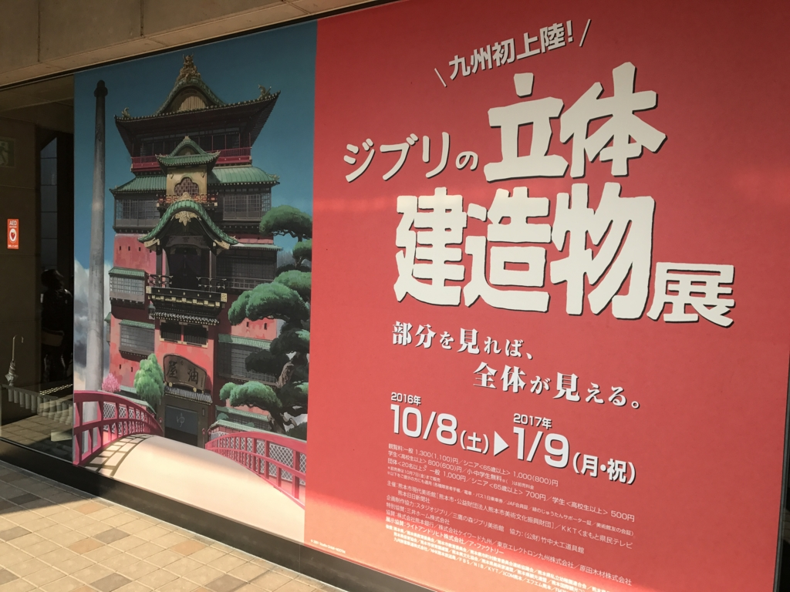
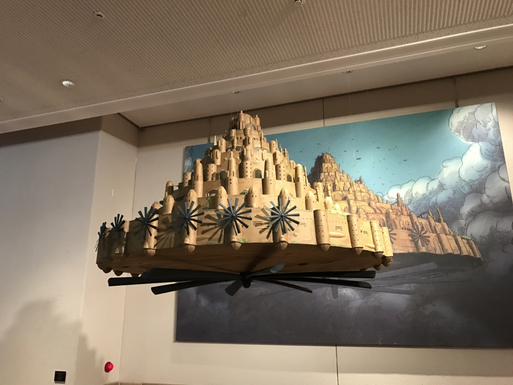

ジブリの立体建造物展
公開日：

熊本旅行の〆は、なぜか美術館でした。
熊本市現代美術館は繁華街にあってアクセスが大変よろしいですね。今回観たのは『ジブリの立体建造物展』です。
スタジオジブリは1985年の創立以来、多くのアニメーション作品を発表してきました。作品中にはドラマが起こる舞台として、沢山の「建造物」が登場します。本展覧会では出発点となった「風の谷のナウシカ」から、「思い出のマーニー」まで、作品に登場する建造物の、背景画や美術ボード、美術設定といった制作資料を公開。代表的な建造物を立体で表現し、その設計の源に触れます。
全国持ち回りでやってるのかな？ そのうち松山でもやるかもね。

ちなみに写真撮影は禁止。受付の外にラピュタが浮いていたのでそれだけ撮ってきました（なかではないし、他の人も撮ってたし、まぁ、大丈夫？）。
まず思ったのは「俺、最近のジブリぜんぜん観ていないんだなぁ」ってこと。スタジオジブリの年表 - スタジオジブリ｜STUDIO GHIBLI から自分が観てないモノにチェックを入れてみた。
- 1984年 「風の谷のナウシカ」公開
- 1986年 「天空の城ラピュタ」公開
- 1988年 「となりのトトロ」「火垂るの墓」公開
- 1989年 「魔女の宅急便」公開
- 1991年 「おもひでぽろぽろ」公開
- 1992年 「紅の豚」公開
- 1993年 「海がきこえる」放映
- 1994年 「平成狸合戦ぽんぽこ」公開
- 1995年 「耳をすませば」「On Your Mark」公開
- 1997年 「もののけ姫」公開
- 1999年 ×「ホーホケキョとなりの山田くん」公開
- 2001年 「千と千尋の神隠し」公開
- 2002年 「猫の恩返し」「ギブリーズepisode2」公開
- 2004年 「ハウルの動く城」公開
- 2006年 「ゲド戦記」公開
- 2008年 「崖の上のポニョ」公開
- 2010年 △「借りぐらしのアリエッティ」（米林宏昌監督）公開
- 2011年 ×「コクリコ坂から」（宮崎吾朗監督）公開
- 2013年 ×「風立ちぬ」（宮崎駿監督）公開
- 2013年 ×「かぐや姫の物語」（高畑勲監督）公開
- （2014年「ジブリの立体建造物展」を江戸東京たてもの園にて開催）
- 2014年 ×「思い出のマーニー」（米林宏昌監督）公開
「借りぐらしのアリエッティ」はテレビで観た気がするけど、ながら見だったのでストーリーを全然覚えていない。実は「崖の上のポニョ」も地上波で初めて見たので、2006年の「ゲド戦記」を最後にほとんどロクに観てないんだな。なので、「カルチェラタン」とか言われてもなにそれって感じだった。(ﾉ∀`)ｱﾁｬｰ
でも、今回の展示観て「コクリコ坂から」「風立ちぬ」あたりは観たいなーって思ったかも。ちなみにジブリ作品の中では「紅の豚」「海がきこえる」辺りが好きです。でも、とくに「海がきこえる」が好きっていうと割と不思議がられるんだけど――あれ、ダメなのかな？
展示のなかでは、「病院はなぜ白くて洋風なのか？」みたいな話が面白かったですね（なんでだと思います？ 言われてみればそうだよねーって感じでした！）。そして、やっぱり「千と千尋の神隠し」の「油屋」が圧巻。「千と千尋の神隠し」は何回も見たので、ストーリーが完全に頭の中にはいってて。「あー、ちひろはここをこうやって走ってたんだなー」みたいな感じで、「油屋」の周りをグルグルしてしまいました。
あと「草壁家」なんかも面白かったかも。和風と洋風があいのこになった、でもおかしさを感じさせない家。で、思ったのですが、やっぱり自分は“最初から完成している”
洋風の家よりも、“付けたし”ていく感じの和風の家の方が好きですね。じゃないと、「ハウルの城」みたいな有機的なデザインにならないかも。これはこどもの頃からのちょっとした夢なのだけど、自分が家を建てたら どんでん返し が絶対ほしい。忍者屋敷にあるヤツね。掛け軸をめくったら秘密の抜け道があるとか、板張りの床のある部分をバーンと踏むとカタナが出てくるとか。屋根裏へ行くための縄梯子もほしい。でもこれ、ぜんぶ新築のときに作りたいかっていうと全くそうではなくて、あとからちょくちょく付け足したいんだ。こどもが小さなうちは、そういうのがあると危ないしね。ひとつひとつ、みんなで作っていきたい。そっちの方が、家が生きている感じ、しませんか？ 嫁さんにバカにされながらそういうの、やってみたい。まぁ、そんな人生も今とは異なる世界線の果てに行ってしまった感じがあるけれどｗ
展示を見ながらそんなことを思ったりもしました。